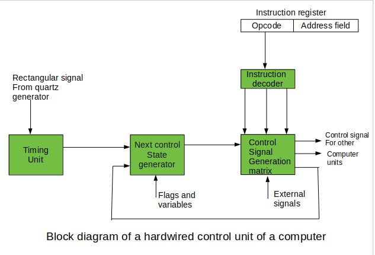
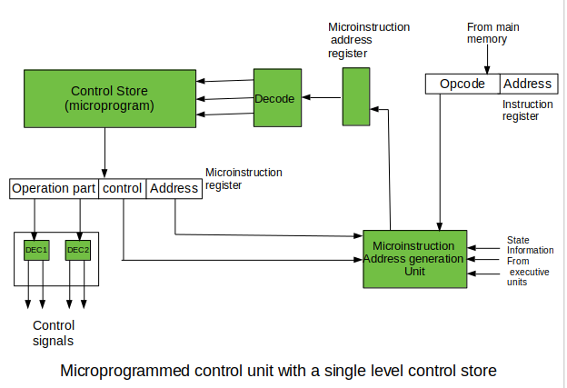
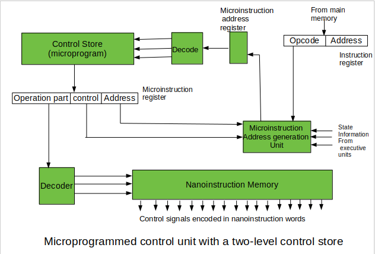

A Central Processing Unit is the most important component of a computer system.
A control unit is a part of the CPU.
control unit controls the operations of all parts of the computer but it does not carry out any data processing operations.
What is a Control Unit?
The Control Unit is the part of the computer’s central processing unit (CPU), which directs the operation of the processor.
It was included as part of the Von Neumann Architecture by John von Neumann.
It is the responsibility of the control unit to tell the computer’s memory, arithmetic/logic unit, and input and output devices how to respond to the instructions that have been sent to the processor.
It fetches internal instructions of the programs from the main memory to the processor instruction register, and based on this register con
tents, the control unit generates a control signal that supervises the execution of these instructions.
A control unit works by receiving input information which it converts into control signals, which are then sent to the central processor.
The computer’s processor then tells the attached hardware what operations to perform.
The functions that a control unit performs are dependent on the type of CPU because the architecture of the CPU varies from manufacturer to manufacturer.
Examples of devices that require a CU are:
- Control Processing Units(CPUs)
- Graphics Processing Units(GPUs)

Functions of the Control Unit
- It coordinates the sequence of data movements into, out of, and between a processor’s many sub-units.
- It interprets instructions.
- It controls data flow inside the processor.
- It receives external instructions or commands to which it converts to sequence of control signals.
- It controls many execution units(i.e. ALU, data buffers and registers) contained within a CPU.
- It also handles multiple tasks, such as fetching, decoding, execution handling and storing results.
Types of Control Unit
- Hardwired control unit
- Micro programmable control unit.
Hardwired Control Unit
In the Hardwired control unit, the control signals that are important for instruction execution control are generated by specially designed hardware logical circuits, in which we can not modify the signal generation method without physical change of the circuit structure. The operation code of an instruction contains the basic data for control signal generation. In the instruction decoder, the operation code is decoded. The instruction decoder constitutes a set of many decoders that decode different fields of the instruction opcode.
As a result, few output lines going out from the instruction decoder obtains active signal values. These output lines are connected to the inputs of the matrix that generates control signals for execution units of the computer. This matrix implements logical combinations of the decoded signals from the instruction opcode with the outputs from the matrix that generates signals representing consecutive control unit states and with signals coming from the outside of the processor, e.g. interrupt signals. The matrices are built in a similar way as a programmable logic arrays.

Control signals for an instruction execution have to be generated not in a single time point but during the entire time interval that corresponds to the instruction execution cycle. Following the structure of this cycle, the suitable sequence of internal states is organized in the control unit. A number of signals generated by the control signal generator matrix are sent back to inputs of the next control state generator matrix.
This matrix combines these signals with the timing signals, which are generated by the timing unit based on the rectangular patterns usually supplied by the quartz generator. When a new instruction arrives at the control unit, the control units is in the initial state of new instruction fetching. Instruction decoding allows the control unit enters the first state relating execution of the new instruction, which lasts as long as the timing signals and other input signals as flags and state information of the computer remain unaltered.
A change of any of the earlier mentioned signals stimulates the change of the control unit state. This causes that a new respective input is generated for the control signal generator matrix. When an external signal appears, (e.g. an interrupt) the control unit takes entry into a next control state that is the state concerned with the reaction to this external signal (e.g. interrupt processing).
The values of flags and state variables of the computer are used to select suitable states for the instruction execution cycle. The last states in the cycle are control states that commence fetching the next instruction of the program: sending the program counter content to the main memory address buffer register and next, reading the instruction word to the instruction register of computer. When the ongoing instruction is the stop instruction that ends program execution, the control unit enters an operating system state, in which it waits for a next user directive.
Micro programmable control unit.
The fundamental difference between these unit structures and the structure of the hardwired control unit is the existence of the control store that is used for storing words containing encoded control signals mandatory for instruction execution. In microprogrammed control units, subsequent instruction words are fetched into the instruction register in a normal way. However, the operation code of each instruction is not directly decoded to enable immediate control signal generation but it comprises the initial address of a microprogram contained in the control store.
- With a single-level control store: In this, the instruction opcode from the instruction register is sent to the control store address register. Based on this address, the first microinstruction of a microprogram that interprets execution of this instruction is read to the microinstruction register. This microinstruction contains in its operation part encoded control signals, normally as few bit fields. In a set microinstruction field decoders, the fields are decoded. The microinstruction also contains the address of the next microinstruction of the given instruction microprogram and a control field used to control activities of the microinstruction address generator.

The last mentioned field decides the addressing mode (addressing operation) to be applied to the address embedded in the ongoing microinstruction. In microinstructions along with conditional addressing mode, this address is refined by using the processor condition flags that represent the status of computations in the current program. The last microinstruction in the instruction of the given microprogram is the microinstruction that fetches the next instruction from the main memory to the instruction register
- With a two-level control store: In this, in a control unit with a two-level control store, besides the control memory for microinstructions, a nano-instruction memory is included. In such a control unit, microinstructions do not contain encoded control signals. The operation part of microinstructions contains the address of the word in the nano-instruction memory, which contains encoded control signals. The nano-instruction memory contains all combinations of control signals that appear in microprograms that interpret the complete instruction set of a given computer, written once in the form of nano-instructions.

In this way, unnecessary storing of the same operation parts of microinstructions is avoided. In this case, microinstruction word can be much shorter than with the single level control store. It gives a much smaller size in bits of the microinstruction memory and, as a result, a much smaller size of the entire control memory. The microinstruction memory contains the control for selection of consecutive microinstructions, while those control signals are generated at the basis of nano-instructions. In nano-instructions, control signals are frequently encoded using 1 bit/ 1 signal method that eliminates decoding.
Advantages of a Well-Designed Control Unit
- Efficient instruction execution:A well-designed control unit can execute instructions more efficiently by optimizing the instruction pipeline and minimizing the number of clock cycles required for each instruction.
- Improved performance:A well-designed control unit can improve the performance of the CPU by increasing the clock speed, reducing the latency, and improving the throughput.
- Support for complex instructions: A well-designed control unit can support complex instructions that require multiple operations, reducing the number of instructions required to execute a program.
- Improved reliability:A well-designed control unit can improve the reliability of the CPU by detecting and correcting errors, such as memory errors and pipeline stalls.
- Lower power consumption:A well-designed control unit can reduce power consumption by optimizing the use of resources, such as registers and memory, and reducing the number of clock cycles required for each instruction.
- Better branch prediction: A well-designed control unit can improve branch prediction accuracy, reducing the number of branch mispredictions and improving performance.
- Improved scalability: A well-designed control unit can improve the scalability of the CPU, allowing it to handle larger and more complex workloads.
- Better support for parallelism:A well-designed control unit can better support parallelism, allowing the CPU to execute multiple instructions simultaneously and improve overall performance.
- Improved security :A well-designed control unit can improve the security of the CPU by implementing security features such as address space layout randomization and data execution prevention.
- Lower cost: A well-designed control unit can reduce the cost of the CPU by minimizing the number of components required and improving manufacturing efficiency.
Disadvantages of Poorly-Designes Control Unit
- Reduced performance: A poorly-designed control unit can reduce the performance of the CPU by introducing pipeline stalls, increasing the latency, and reducing the throughput.
- Increased complexity: A poorly-designed control unit can increase the complexity of the CPU, making it harder to design, test, and maintain.
- Higher power consumption: A poorly-designed control unit can increase power consumption by inefficiently using resources, such as registers and memory, and requiring more clock cycles for each instruction.
- Reduced reliability: A poorly-designed control unit can reduce the reliability of the CPU by introducing errors, such as memory errors and pipeline stalls.
- Limitations on instruction set: A poorly-designed control unit may limit the instruction set of the CPU, making it harder to execute complex instructions and limiting the functionality of the CPU.
- Inefficient use of resources: A poorly-designed control unit may inefficiently use resources such as registers and memory, leading to wasted resources and reduced performance.
- Limited scalability: A poorly-designed control unit may limit the scalability of the CPU, making it harder to handle larger and more complex workloads.
- Poor support for parallelism: A poorly-designed control unit may limit the ability of the CPU to support parallelism, reducing the overall performance of the system.
- Security vulnerabilities: A poorly-designed control unit may introduce security vulnerabilities, such as buffer overflows or code injection attacks.
- Higher cost: A poorly-designed control unit may increase the cost of the CPU by requiring additional components or increasing the manufacturing complexity.